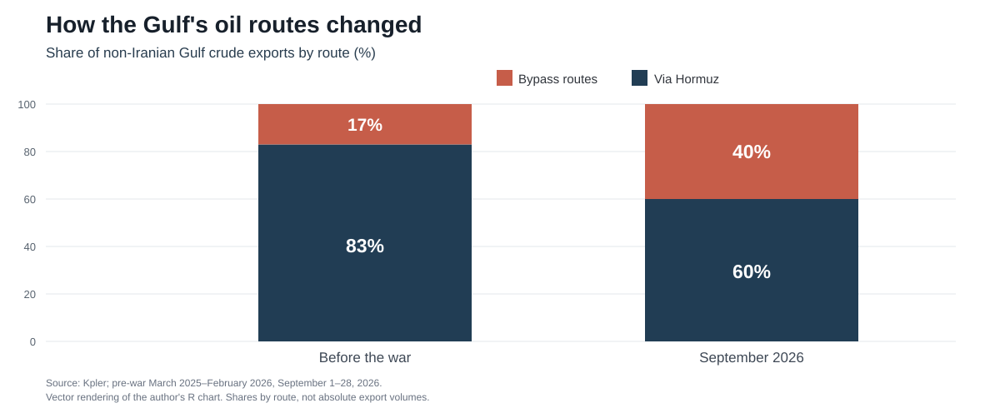

Sam Altman arrived in Abu Dhabi this week to discuss using artificial intelligence to produce oil more efficiently. Some American energy executives stayed away, fearing renewed war with Iran. The contrast at ADIPEC captured the Gulf's predicament. Its producers are eager to expand, but their customers must be able to receive what they pump.
The cost of getting oil to market has already changed dramatically. Sultan Al Jaber, chief executive of ADNOC, told the conference that logistics now account for more than 30% of the cost of a barrel, up from less than 5% before the disruption. Those are ADNOC's estimates. But the region's response is measurable. According to Kpler, non-Iranian Gulf crude exports were back at roughly pre-war volumes by September. Some 40% left without passing through the Strait of Hormuz, against 17% before the war (see chart).

The UAE has shown what earlier infrastructure investment can achieve. Its crude and condensate exports rebounded from 2.13m barrels a day in March to 3.94m in June, according to Kpler figures reported by The National. The Habshan–Fujairah pipeline takes oil to the Gulf of Oman without crossing Hormuz; tanker shuttles carry other barrels through the strait for transfer offshore, in some cases with US military assistance documented by Reuters. A second pipeline, planned before the war, is under construction, with the aim of doubling Fujairah export capacity by 2027.
But a bypass does not eliminate military risk. Drone attacks interrupted loadings at Fujairah in March; Saudi Arabia's alternative East–West pipeline was also disrupted in September. Nor is redundancy cheap. A pipeline built mainly for emergencies still needs financing and protection when traffic returns to its usual route. As Arabian Gulf Business Insight argues, the cost may ultimately fall on national oil companies or the state.
Bloomberg reported on November 4th that ADNOC was considering a third pipeline to Fujairah, potentially open to other producers. ADNOC rejected the report as inaccurate and speculative; no route or project has been confirmed. Third-party use could improve the economics, but another line would also concentrate more exports around a port already exposed to attacks.
The case for bypass routes may also survive the war. Iran has sought to impose charges on ships passing through Hormuz, despite international law protecting free transit. Whether Tehran can enforce such demands after a peace agreement remains uncertain. But a pipeline to Fujairah would avoid the strait altogether, insulating exporters from potential Iranian fees and restrictions. Its value, then, need not disappear when the fighting stops.
That makes the location of the next investment more interesting than the length of the next pipeline. For the UAE, storage closer to customers offers another sort of insurance. ADNOC already has 5.86m barrels in India's Mangalore strategic reserve. In May it agreed to explore expanding its Indian storage arrangements to as much as 30m barrels, including existing capacity. Oil positioned near buyers can cushion short disruptions and serve commercial customers in normal times. It is not a perfect safeguard: stocks run down, and the host government has priority access to strategic reserves during emergencies.
More investment in renewables and nuclear power would strengthen domestic energy security, but it would not by itself protect oil-export earnings. With buyers still seeking affordable energy, the immediate commercial test is to keep crude moving. ADIPEC's confidence therefore has a rational basis. The Gulf has restored shipments through ingenuity and spare infrastructure. The next question is whether another dollar spent near the customer buys more security than another put into a pipeline at home.